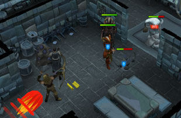

Dungeoneering - Complexity 3
Introduction

What to Expect in Complexity Level 3
As noted above, level 3 complexity enables you to use several more skills, specifically those that can be put to use making weapons and equipment: Smithing and Fletching, Mining, and Runecrafting. Information on other skills that can be employed at complexity level 2 can be found here: The smuggler offers an increased shop stock.
Making Weapons

As is common outside of Daemonheim, you will need a hammer in order to smith weapons upon the anvils, and a knife to fletch. You will also need to locate bowstrings if you want to make a bow. All of these supplies are available from the smuggler, and the starting room is equipped with a furnace, anvils and a spinning wheel.
For more information on Smithing in Daemonheim, click here.
For more information on Fletching in Daemonheim, click here.
For information on the mage, ranged and melee equipment of Daemonheim, click here. For more information on Smithing in RuneScape, outside of Daemonheim, click here.
For more information on Fletching in RuneScape, outside of Daemonheim, click here.
Mining

For more information on Mining in Daemonheim, click here.
For more information on Mining in RuneScape, outside of Daemonheim, click here.
Runecrafting

For more information on Runecrafting in Daemonheim, click here.
For more information on Runecrafting in RuneScape, outside of Daemonheim, click here.
Click here to view the Dungeoneering FAQ

More articles in
Dungeoneering
|
|
|
Further Help
Need more help? Come chat with us!
|
|